This panel is driven from Claude's chat. Keep it open and ask Claude in your own words: it edits this
project with Motion DNA's moves, curves, titles and formats.
No project yet
Try asking Claude
What Claude is doing

Nothing yet.
Motion DNA for Premiere · beta